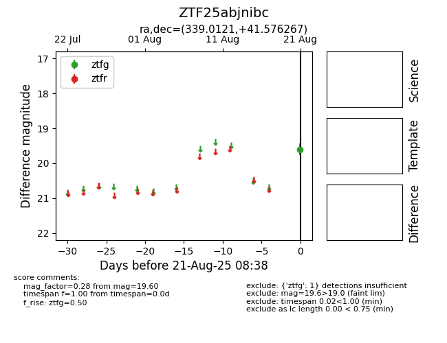

Target ZTF25abjnibc at 2025-08-21 08:38, see:
FINK: fink-portal.org/ZTF25abjnibc
Lasair: lasair-ztf.lsst.ac.uk/objects/ZTF25abjnibc
ALeRCE: alerce.online/object/ZTF25abjnibc
alt names
ZTF25abjnibc (ztf,alerce)
coordinates:
equatorial (ra, dec) = (339.0121,+41.57627)
galactic (l, b) = (97.4410,-14.49791)
photometry
last ztfg=19.60
1 ztfg detections
